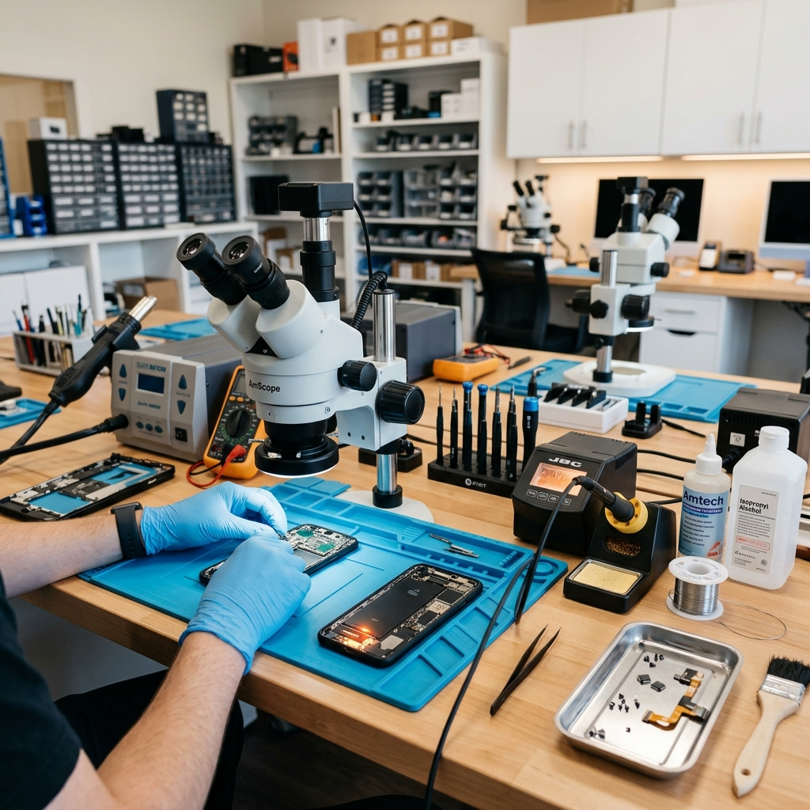

Află povestea din spatele Robi Electronics Discover the story behind Robi Electronics

Robi ElectronicsRobi Electronics a fost fondată în anul 2020 în Orșova, din pasiunea pentru tehnologie și din dorința de a oferi servicii de reparații de încredere comunității locale. Ceea ce a început ca un mic atelier s-a transformat rapid într-ul dintre cele mai respectate centre de reparații electronice din regiune. was founded in 2020 in Orsova, out of a passion for technology and a desire to provide reliable repair services to the local community. What started as a small workshop quickly grew into one of the most respected electronics repair centers in the region.
Echipa noastră s-a format în jurul a doi tehnicieni cu o experiență vastă în domeniul reparațiilor GSM și IT. Ne punem mereu la punct cu noile tehnologii pentru a putea aborda orice problemă, de la ecranul spart al unui telefon nou, până la depanarea la nivel de placă de bază a laptopurilor complexe. Our team was formed around two technicians with extensive experience in GSM and IT repairs. We always stay up to date with new technologies so that we can tackle any problem, from the broken screen of a new phone to complex motherboard troubleshooting for laptops.
Suntem un service transparent. Promitem diagnosticări corecte, prețuri juste și piese de calitate. Valorificăm timpul clienților noștri, de aceea eficientizăm la maximum procesul de reparație, asigurând timpi rapizi de execuție de cele mai multe ori chiar în aceeași zi. We are a transparent service center. We promise honest diagnostics, fair pricing, and quality parts. We value our customers' time, which is why we streamline the repair process to ensure fast turnaround times, often on the same day.
Peste 5 ani de reparații la nivel avansat, gestionând zilnic zeci de cazuri complexe. Over 5 years of advanced repair experience, handling dozens of complex cases daily.
Folosim doar piese originale sau OEM de cea mai înaltă calitate, acompaniate de garanție extinsă. We only use high-quality original or OEM parts, accompanied by an extended warranty.
Prin divizia noastră digitală, ne-am extins oferind servicii web securizate pentru clienții pasionați. Through our digital division, we have expanded to offer secure web services for passionate clients.